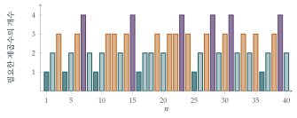

STEP III 1994, 문제 8
계속 읽기 전에 문제를 먼저 읽어 보자. 문제는 STEP Support Programme의 문제 데이터베이스에 있다: step.maths.org/questions/94-s3-q8
도입
\(7\)은 두 제곱수(square)의 합으로도, 세 제곱수의 합으로도 나타낼 수 없다. 그러나 네 제곱수의 합으로는 나타낼 수 있다: \(7 = 4 + 1 + 1 + 1\). 1770년 라그랑주(Joseph-Louis Lagrange)는 모든 양의 정수가 네 제곱수의 합(\(0^2\)도 허용한다)임을 증명하였다. 이 정리는 1621년 바셰(Bachet)가 추측하였고, 페르마(Fermat)도 이를 주장하였지만 늘 그렇듯 증명을 남기지 않았다. 오일러(Euler)는 40년 동안 이 문제에 매달렸으나 끝내 완성하지 못하였다.
핵심 도구는 1748년 오일러가 발견한 것으로, 바로 이 문제에 담겨 있다. 네 제곱수의 합 두 개를 곱한 것은 다시 네 제곱수의 합이라는 사실이다. 따라서 라그랑주의 정리는 소수(prime)에 대해서만 증명하면 되고, 나머지는 곱셈으로 따라 나온다. 이 문제는 복소수(complex number) 행렬의 행렬식(determinant)으로부터 몇 줄 만에 이 항등식을 유도하는데, 이 행렬들은 사실 6.7 절의 사원수(quaternion)가 모습을 바꾼 것이다.
시작하기 전에
두 제곱수 버전을 떠올려 보자. 복소수 \(z = a + b\mathrm{i}\), \(w = p + q\mathrm{i}\)에 대하여 \(|z|^2|w|^2 = |zw|^2\)이므로 \((a^2 + b^2)(p^2 + q^2)\)은 두 제곱수의 합이다. 행렬을 이용하면 이것을 어떻게 네 제곱수로 확장할 수 있을까?
아이디어는 네 실수로 만들어지는 일종의 “수”로서, 그 “크기의 제곱”이 \(a^2 + b^2 + c^2 + d^2\)이고 곱셈적(multiplicative)인 것을 찾는 것이다. 행렬은 행렬식에 대하여 곱셈적이다: \(\det(\mathbf{AB}) = \det\mathbf{A}\det\mathbf{B}\). 그러므로 \(a, b, c, d\)로 만든 행렬로서 행렬식이 \(a^2 + b^2 + c^2 + d^2\)이고, 그러한 행렬끼리의 곱이 다시 같은 꼴이 되는 것을 찾으면 된다.
차근차근 풀기
단계 1 행렬식은 네 제곱수의 합이다
\(\begin{pmatrix} z_1 & z_2 \\ -z_2^* & z_1^* \end{pmatrix}\)의 행렬식은 무엇인가? \(z_1 = a + b\mathrm{i}\), \(z_2 = c + d\mathrm{i}\)이면 이를 \(a, b, c, d\)로 나타내면 어떻게 되는가?
\(\det = z_1z_1^* + z_2z_2^* = |z_1|^2 + |z_2|^2 = a^2 + b^2 + c^2 + d^2\)이다. 마찬가지로 \(z_3 = p + q\mathrm{i}\), \(z_4 = r + s\mathrm{i}\)로 두면 두 번째 행렬의 행렬식은 \(p^2 + q^2 + r^2 + s^2\)이다.
단계 2 곱도 같은 꼴이다
곱하면 \[\begin{pmatrix} z_1 & z_2 \\ -z_2^* & z_1^* \end{pmatrix}\begin{pmatrix} z_3 & z_4 \\ -z_4^* & z_3^* \end{pmatrix} = \begin{pmatrix} z_1z_3 - z_2z_4^* & z_1z_4 + z_2z_3^* \\ -z_2^*z_3 - z_1^*z_4^* & -z_2^*z_4 + z_1^*z_3^* \end{pmatrix}.\] \(w_1 = z_1z_3 - z_2z_4^*\), \(w_2 = z_1z_4 + z_2z_3^*\)으로 두면 아래 행은 \((-w_2^*, w_1^*)\)이므로, 곱은 \(\begin{pmatrix} w_1 & w_2 \\ -w_2^* & w_1^* \end{pmatrix}\)로 같은 꼴이다. 이 행렬의 행렬식은 \(|w_1|^2 + |w_2|^2\)이고, 행렬식은 곱에 대하여 곱해지므로 \[(a^2 + b^2 + c^2 + d^2)(p^2 + q^2 + r^2 + s^2) = |w_1|^2 + |w_2|^2.\]
단계 3 네 제곱수 읽어 내기
\(w_1 = (a + b\mathrm{i})(p + q\mathrm{i}) - (c + d\mathrm{i})(r - s\mathrm{i})\)와 \(w_2 = (a + b\mathrm{i})(r + s\mathrm{i}) + (c + d\mathrm{i})(p - q\mathrm{i})\)를 전개하여 실수부와 허수부로 나누어 보아라.
\[w_1 = (ap - bq - cr - ds) + \mathrm{i}(aq + bp + cs - dr),\] \[w_2 = (ar - bs + cp + dq) + \mathrm{i}(as + br - cq + dp).\] 따라서 \[\begin{aligned} L_1 &= ap - bq - cr - ds, & L_2 &= aq + bp + cs - dr, \\ L_3 &= ar - bs + cp + dq, & L_4 &= as + br - cq + dp, \end{aligned}\] 은 각각 \(a, b, c, d\)에 대해서도, \(p, q, r, s\)에 대해서도 일차식이며, \((a^2 + b^2 + c^2 + d^2)(p^2 + q^2 + r^2 + s^2) = L_1^2 + L_2^2 + L_3^2 + L_4^2\)이다.■
예를 들어 \(7 = 2^2 + 1^2 + 1^2 + 1^2\)이고 \(3 = 1^2 + 1^2 + 1^2 + 0^2\)이다. \((a, b, c, d) = (2, 1, 1, 1)\), \((p, q, r, s) = (1, 1, 1, 0)\)으로 두면 위 공식에서 \((L_1, L_2, L_3, L_4) = (0, 2, 4, 1)\)을 얻고, 실제로 \(0^2 + 2^2 + 4^2 + 1^2 = 21 = 7 \times 3\)이다.
돌아보기
곱셈성이 일을 다 한다. 이 항등식은 \(\det(\mathbf{AB}) = \det\mathbf{A}\det\mathbf{B}\)에서 나왔으며, 이는 두 제곱수 항등식이 \(|zw| = |z||w|\)에서 나오는 것과 똑같다.
곱셈에 대하여 닫혀 있음(closure). 특별한 꼴 \(\begin{pmatrix} z_1 & z_2 \\ -z_2^* & z_1^* \end{pmatrix}\)은 곱해도 유지되며, 바로 이 때문에 결과가 다시 네 제곱수의 합이 된다.
꼼꼼한 계산이 중요하다. 마지막 단계는 기계적이지만 실수하기 쉽다. 부호와 켤레(conjugate)를 주의해서 다루어야 한다.
숨은 수학
라그랑주의 증명의 개요는 다음과 같다. 오일러의 항등식에 의해 모든 소수 \(p\)가 네 제곱수의 합임을 보이면 충분하다. 개수 세기 논법으로 \(m < p\)인 어떤 배수 \(mp\)가 네 제곱수의 합임을 보인다. 그다음 교묘한 “강하법(descent)”으로, \(1 < m < p\)인 \(mp\)가 네 제곱수의 합이면 더 작은 어떤 \(m'\)에 대하여 \(m'p\)도 네 제곱수의 합임을 보인다. 이를 반복하면 \(m = 1\)에 도달한다. (1.5 절의 페르마의 강하법과 비교해 보아라.) 1834년 야코비(Jacobi)는 훨씬 더 나아가 \(n\)을 네 제곱수의 합으로 나타내는 방법의 정확한 개수를 구하였다. 그 개수는 \(n\)의 약수(divisor) 중 \(4\)의 배수가 아닌 것들의 합의 \(8\)배이다. 예를 들어 \(1\)은 \(8\)가지 방법으로 나타낼 수 있다(네 자리 중 어느 한 곳에 \(\pm1\)).

둘, 셋, 넷
차원에 따른 양상은 미묘하다. 두 제곱수의 합은 복소수에서 나오며, 어떤 수가 두 제곱수의 합일 필요충분조건은 그 수의 \(4k + 3\) 꼴인 소인수가 모두 짝수 거듭제곱으로 나타나는 것이다(1.6 절). 네 제곱수의 합은 사원수에서 나오며, 모든 수가 네 제곱수의 합이다. 그러나 세 제곱수의 합에는 곱셈 항등식이 전혀 없으며(크기가 곱셈적인 3차원 수 체계는 존재하지 않는다. 해밀턴(Hamilton)이 세 쌍으로 실패한 이유가 이것이다. 6.7 절 참고), 정리도 더 어렵다. 르장드르와 가우스는 \(n = 4^k(8m + 7)\)이 아닌 한 \(n\)이 세 제곱수의 합임을 보였다(그림 7.8.1). 넷을 넘어서면 8차원의 팔원수(octonion)가 여덟 제곱수 항등식을 주는데, 이는 Degen과 Graves가 발견하였다. 후르비츠(Hurwitz)는 1898년에 이런 종류의 항등식이 \(1\), \(2\), \(4\), \(8\)개의 제곱수에 대해서만 존재함을 증명하였다.
워링의 문제
라그랑주의 정리는 1770년 워링(Edward Waring)이 제기한 질문의 첫 번째 경우이다. 각 \(k\)에 대하여, 모든 양의 정수가 많아야 \(g(k)\)개의 \(k\)제곱수의 합이 되는 수 \(g(k)\)가 존재하는가? 힐베르트(David Hilbert)는 1909년에 그러한 수가 존재함을 증명하였다. 오늘날 우리는 \(g(2) = 4\), \(g(3) = 9\)(예를 들어 \(23 = 2 \cdot 2^3 + 7 \cdot 1^3\)은 세제곱수 아홉 개가 필요하다), \(g(4) = 19\)임을 알고 있다.
사고 기술
어떤 성질이 곱셈에 대하여 보존됨을 보이려면, 그 성질이 어떤 대상의 “크기”이고 그 크기가 곱셈적인 대수적 구조(복소수, 사원수, 행렬)를 찾아라.
그런 구조를 찾고 나면 곱셈 항등식은 저절로 얻어지고, 모든 수에 대한 문제가 소수에 대한 문제로 줄어든다.
더 도전하기
계산 예제. \((a, b, c, d) = (p, q, r, s) = (2, 1, 1, 1)\)로 두고 \(L_1, \ldots, L_4\)의 공식을 이용하여 \(49 = 7 \times 7\)을 네 제곱수의 합으로 나타내고, 답을 확인하여라. 이것은 자명한 \(49 = 7^2 + 0^2 + 0^2 + 0^2\)과 같은가?
넷 속의 둘. \(c = d = r = s = 0\)이면 이 항등식이 1.6 절의 두 제곱수 항등식으로 줄어듦을 보여라.
네 제곱수가 필요한 수. 제곱수를 \(8\)로 나눈 나머지를 생각하여, \(8m + 7\) 꼴의 수는 세 제곱수의 합이 될 수 없음을 보여라.
야코비의 공식. \(2\)를 네 제곱수의 합으로 나타내는 방법(순서와 부호를 구별한다)의 수를 세고, 그 답이 \(8 \times (1 + 2) = 24\)임을 확인하여라.
더 읽을거리
Harold Davenport, The Higher Arithmetic (Cambridge University Press). 제 V장에서 라그랑주의 네 제곱수 정리를 증명한다.
John Conway & Derek Smith, On Quaternions and Octonions (A. K. Peters). 사원수의 산술을 다루며, 사원수 정수를 이용한 네 제곱수 정리의 증명도 담고 있다.
Aigner & Ziegler, Proofs from THE BOOK, “Representing numbers as sums of two squares” 장(수를 두 제곱수의 합으로 나타내기). 이 절과 짝을 이루는 두 제곱수 이야기이다.